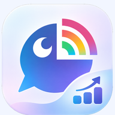

登録者数データ確認中
対象チャンネル—
最終取得—
取得状況—
データ読み込み中
増加—
減少—
登録者数ランキング
—YouTube Data APIの公開登録者数は有効数字3桁に切り捨てられます。比較に必要な記録がない場合は「データ不足」と表示します。取得の失敗や遅延が発生することがあります。
本アプリは非公式の個人制作物で、ANYCOLOR株式会社・YouTubeの公式サービスではありません。

データ読み込み中
YouTube Data APIの公開登録者数は有効数字3桁に切り捨てられます。比較に必要な記録がない場合は「データ不足」と表示します。取得の失敗や遅延が発生することがあります。
本アプリは非公式の個人制作物で、ANYCOLOR株式会社・YouTubeの公式サービスではありません。